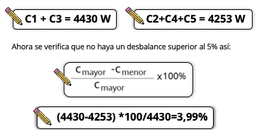

A continuación, se describen los botones de navegación del curso
Esquina superior derecha
 Permite ingresar a la pantalla inicial del curso
Permite ingresar a la pantalla inicial del curso
 Permite desplegar el menú de actividades del curso
Permite desplegar el menú de actividades del curso
 permite ingresar al glosario, bibliografía y archivos PDF del curso
permite ingresar al glosario, bibliografía y archivos PDF del curso
 Permite activar o desactivar el audio del curso
Permite activar o desactivar el audio del curso
Esquina inferior izquierda


Al interior de las actividades de aprendizaje aparece este menú para consultar las demas actividades.
Centro inferior
Página anterior
Página siguiente
Pausar
Reanudar

ESQUEMAS DE CONEXIÓN
Bienvenidos a esta unidad
Un esquema eléctrico debe ser muy claro a la hora de su diseño, debido a que de su interpretación depende el buen funcionamiento de este, debe tener en cuenta responder preguntas sobre conductores, calibre, cómo se conectan los bornes del instrumento de medida a utilizar, entre otros. También se le conoce con el nombre de diagrama esquemático, y se le puede considerar como una combinación entre un diagrama unifilar y un diagrama de montaje, ya que muestra todas las conexiones eléctricas entre de los componentes.
Objetivos
Objetivo:
En esta unidad aprenderás la importancia de la claridad que debe tener un esquema eléctrico a la hora de ser diseñado, ya que de su interpretación depende el buen funcionamiento de este. Conocerás las preguntas a las cuales se debe responder en el desarrollo de esquema de conexión, tales como cantidad de conductores, calibre, forma en que se conectan los bornes del instrumento de medida a atilizar.
Contenido temático:
Contenido temático:
- 1. Conocimiento de cargas electricas y esquemas de conexion
- 2. Luminotécnia, factores de iluminación y sistemas de ilumnación.
- 3. Flujo luminoso y fuentes de luz.
- 4. Luminación y reglamento técnico.
- 5. Normas y características técnicas de los conductores.
- 6. Normas en el tensionado y características de los empalmes, ponchadas y aisladores.
Metodología
Metodología:
Esta unidad se compone de secciones temáticas, en cada sección encontrará una situación a resolver (Actividad) acompañada de una guía de aprendizaje que lo orientará en el desarrollo del problema planteado.
Montaje y Ensamble de circuitos electrónicos
Esta unidad está divida en seis actividades de aprendizaje, las cuales deberás explorar y desarrollar conforme avance el contenido.
Lo que aprenderás
- Identificar magnitudes en instrumentos de medición de acuerdo a los parámetros a medir en el circuito eléctrico.
- Verificar la configuración y conexión del sistema a través de la documentación técnica, manuales de procedimiento, manuales de fabricación y los planos de conexión.
- Realizar diseño de una instalación eléctrica.
Lo que vas a necesitar
- Implementar el trabajo multidisciplinario permitiendo fortalecer los planteamientos hechos.
- Identificar las características e interpretación de los manuales, esquemas e instructivos.
- Lograr comunicar de forma explícita y concreta los resultados del trabajo realizado.
ACTIVIDAD DE APRENDIZAJE 1
Hola, Bienvenidos a la actividad de aprendizaje donde conocerás las cargas eléctricas y esquemas de conexión.
Haga clic en el botón "Siguiente" para continuar:

Profesor: Deberás aplicar los conceptos básicos de esquemas de conexión e instrumentos de medida, aplicar los conocimientos básicos sobre protección de corto circuito, fusibles e interruptores automáticos de acuerdo con el consumo individual, circuitos ramales y general; interpretar las técnicas para la elaboración de planes de secuencia para las pruebas y ensayos; identificar las cargas eléctricas resistivas, cuadro de cargas y calcular los alimentadores y acometidas para un tablero de distribución de usuario.
Estudiante: Comprendo lo que debo realizar profesor, ¿Cuál es la información que necesito para resolver la actividad?

Profesor: La información necesaria para resolver la actividad, la encontrarás en el contendido disponible a continuación. Recuerda descargar y desarrollar la guía de aprendizaje.
Estudiante: ¡Está bien profesor, revisaré la información y resolveré la actividad!
Haga clic en el botón "descargar actividad":

Esquemas de conexión de los instrumentos de medida
Conocer el funcionamiento de los instrumentos de medida y su forma de conexión es de gran importancia ya que es la base fundamental para una buena lectura de las magnitudes que estos brindan y con esta interpretar un circuito eléctrico. A continuación, observará como se conectan según la magnitud que se quiere leer:
 Clic en cada tipo de medición.
Clic en cada tipo de medición.
Intensidad
El instrumento de medida para la medición de esta magnitud dentro del sistema eléctrico debe ser un amperímetro, o en su defecto un multímetro, el cual se conecta en serie con respecto a la carga para que la corriente producida por este sea medida por el equipo, su valor será dado en amperios (A).
Tensión
El instrumento de medida para la medición de esta magnitud dentro del sistema eléctrico debe ser un voltímetro o en su defecto un multímetro el cual se conecta en paralelo, su valor será dado en voltios (V).
Resistencia
Para medir la resistencia de un componente en particular, se debe quitar el componente por completo del circuito y medirlo separadamente, como se muestra en la siguiente figura:
Esquemas de conexión de los instrumentos de medida
¿Cómo se conecta el multímetro?
Este funciona a través de dos clavijas, una es la marcada como COM y la otra clavija es la que marca la magnitud que se desea medir (V, Ω, ó A ) para medir como voltímetro, óhmetro o como amperímetro o miliamperímetro.
Conocimientos básicos sobre Protección de Corto Circuito, Fusibles e Interruptores, Circuitos Ramales y General
Dentro de los elementos que constituyen un circuito eléctrico se encuentran los de protección, los cuales son los encargados de proteger el sistema evitando cortos circuitos debido a sobrecorriente o destrucción de equipos causados por fallas simples que puedan encadenarse sin control hasta afectar cualquier tipo de instalación.
Cortocircuito

Fusibles

Circuitos ramal

Interruptor Automático

Totalizador
Ejercicio de aprendizaje

EMPAREJAMIENTO
Empareja el concepto con su definición:
Interpretación y manejo de las técnicas para la elaboración de planes de secuencia para las pruebas y ensayos
Un plan de secuencia corresponde a un programa detallado, ordenado, estructurado, plasmando en este el modo y los elementos necesarios para llevar a cabo una acción, dándole trazabilidad a un proceso.
Cómo interpretar y manejar las técnicas
Clic en cada tipo de medición.
Delimitación del plan
- a. ¿Cuál es el plan a desarrollar?
- b. ¿Lugar dónde se inicia?
- c. ¿Lugar dónde termina?
Recolección de la información:
Este consiste en reunir el mayor número de documentación detallada, específica, sustentada y coherente que permitan conocer el proceso como tal a través de los siguientes métodos.
- a. Exploración documental.
- b. Entrevista directa (En caso de ser necesaria).
- c. Análisis in situ.
Análisis de la información y diseño del plan
La relevancia en este punto radica en el estudio de la información recolectada, ya que al analizarla se obtiene información precisa del estado actual del plan, para esto se requiere desarrollar las siguientes preguntas:
- a.¿Qué plan se hace?
- b.¿Quién lo hace?
- c.¿Cómo se hace?
- d.¿Cuándo se hace?
- e.¿Dónde se hace?
- f.¿Por qué se hace?
Análisis del procedimiento:
En este momento se comienza con un análisis del plan y se considera una depuración o mejora del mismo. Se puede tecnificar así:
- a. Descartar lo innecesario.
- b.Combinar procedimientos.
- c.Cambiar algún tipo de orden, actividad o diseño.
- d.Mejorar.
- e.Mantener el plan que dio como resultado del análisis de la información recaudada.
Ejercicio de aprendizaje
Escribe en el recuadro, falso o verdadero, según consideres es la respuesta correcta:
La exploración documental, entrevista directa y análisis en situ son métodos de recolección de la información.
Qué, quién, cómo, cuándo, dónde, por qué se hace, son las preguntas para el diseño del plan.
Para delimitar el plan se debe pregunta cuál es y donde comienza y termina.
Cargas eléctricas resistivas cuadro de cargas
El cuadro de cargas brinda al lector del plano eléctrico, una perspectiva clara, amplia y rápida del circuito de la instalación eléctrica de cualquier estructura física a construir, de igual forma permite conocer a través de este la carga con la cual fue construida el espacio, sean tomas especiales, generales, luminarias y la cantidad conformada en cada circuito, de allí radica la importancia de su elaboración.
Cargas eléctricas resistivas cuadro de cargas
La siguiente tabla ejemplifica las cargas y circuitos que componen un cuadro de cargas:
Tomando como ejemplo el cuadro de cargas y sabiendo que se tiene a disposición dos fases, se procede a encontrar la acomodación del circuito así:
De acuerdo a los resultados obtenidos, las fases quedan conformadas por los circuitos de esta manera:
Cálculo de alimentadores y acometidas para un tablero de distribución de usuario
Las cargas dentro del diseño eléctrico marcan la partida para el desarrollo de la distribución eléctrica.
Por corriente
Para este método se determina la carga total del lugar donde se va instalar el alimentador, de la cual se calculará el calibre de los alimentadores principales y se aplica la fórmula:
I = P / ( V * 0.9 )
Pase el mouse por encima de la fórmula
Luego, con la I,se halla la Ic (corriente corregida), la cual se multiplica por un factor de demanda(f.d.) obtenido de la Tabla 3, quedando así:
Ic=(I)(f.d.)
De este modo con Ic, se obtiene el calibre del conductor en la Tabla 4.
Cálculo de alimentadores y acometidas
Para un tablero de distribución de usuario
Las cargas dentro del diseño eléctrico marcan la partida para el desarrollo de la distribución eléctrica.
Por caída de tensión
Se define como la pérdida de potencial en la conducción de la corriente eléctrica en el conductor. En cuanto a ésta metodología el (CREG, Reglamento técnico de instalaciones eléctricas - RETIE). Artículo 27.3 (C) Acometidas dice:
A continuación, se realiza un ejemplo del método por corriente, ya que es el más utilizado.
Sea la potencia total de 4200 W para un circuito ramal de una instalación eléctrica monofásica de 127 V, se determina el calibre de la siguiente manera:
De clic en cada paso
Cálculo de alimentadores y acometidas para un tablero de distribución de usuario
Las cargas dentro del diseño eléctrico marcan la partida para el desarrollo de la distribución eléctrica.
Es el cable que hace conexión entre la red de distribución y el medidor de energía, según el Artículo 110-5 de la (Norma técnica Colomiana 2050), se señala que los conductores pueden ser de dos tipos:
Están formados por varios hilos de alambre entrelazados.
Están formados por un solo hilo de cobre o de aluminio, y su diámetro depende del calibre del conductor.
Para el cálculo de la acometida se debe:
Calcular la carga total.
Establecer un factor de demanda
Definir el valor de tensión que va alimentar.
Cálculo de alimentadores y acometidas para un tablero de distribución de usuario
Las cargas dentro del diseño eléctrico marcan la partida para el desarrollo de la distribución eléctrica.
Ejemplo de cálculo de una acometida

Se tiene una vivienda con una carga general de 28 720 VA , con un sistema bifásico de 220V.
Cálculo de acometida
Aplicarle el factor de demanda según sección 220.82(B).de (Norma técnica Colombiana 2050)
| Primeros 10 kVA de la carga general al 100 % | 10 000 VA |
| Remanente de la carga general al 40 % | 7 488 V(18720 VA × 0,4) |
| Total de la carga general | 17 488 VA |
Cálculo de alimentadores y acometidas para un tablero de distribución de usuario.
Las cargas dentro del diseño eléctrico marcan la partida para el desarrollo de la distribución eléctrica.
Ahora se divide la carga general entre la tensión de alimentación:
17 488 VA / 240V = 72,8 A
La corriente dio 72,8 A y de acuerdo a la (Norma tecnica Colomiana 2050) la capacidad de corriente mínima de la acometida debe ser de 100 A, de acuerdo con las secciones 230.42 y 230.79.
Según lo anterior, se busca el calibre según corriente de 100 A en la Tabla 4, dando como resultado un calibre de 3 AGW.
ACTIVIDAD DE APRENDIZAJE 2
Bienvenidos a la actividad de aprendizaje luminotécnia, factores de iluminación y sistemas de ilumnación.
A continuación, se presenta la situación a resolver dentro de esta actividad.
Profesor: ¡Hola! Bienvenidos a la segunda actividad de esta unidad donde conocerás las cargas eléctricas y esquemas de conexión.
Estudiante: Muy bien profesor ¿Y de qué se trata la actividad?
Profesor: Deberás comprender los conceptos de luminotecnia como son el flujo luminoso, intensidad luminosa, nivel de iluminación; describir los factores de los cuales depende el nivel de iluminación y determinar el sistema de iluminación adecuado según el espacio.
Estudiante: Comprendo lo que debo realizar profesor, ¿Cuál es la información que necesito para resolver la actividad?
Profesor: La información necesaria para resolver la actividad, la encontrarás en el contendido disponible a continuación. Recuerda descargar y desarrollar la guía de aprendizaje.
Estudiante: ¡Está bien profesor, revisaré la información y resolveré la actividad!
Haga clic en el botón "descargar actividad":
Conceptos de luminotecnia: flujo luminoso, intensidad luminosa, nivel de iluminación
Conocer el funcionamiento de los instrumentos de medida y su forma de conexión es de gran importancia ya que es la base fundamental para una buena lectura de las magnitudes que estos brindan y con esta interpretar un circuito eléctrico. A continuación, como se conectan según la magnitud que se quiere leer:
Clic en cada tipo de medición.
Flujo Luminoso
Se entiende como la cantidad de emisión luz que brinda una fuente luminosa en todo el espacio en la que se encuentra. Su unidad es el lumen (Im).
Intensidad Luminosa
Se define como la cantidad de flujo luminoso que emite una fuente por unidad de ángulo sólido, donde el ángulo solido se refiere al ángulo espacial que abarca un objeto visto desde un punto dado.
Nivel de iluminación
Se refiere a la capacidad que tiene una luminaria de mantener en el tiempo la intensidad luminosa requerida en la unidad de trabajo respectiva o en su defecto la necesidad visual.
Factores de los cuales depende el nivel de iluminación
Haciendo alusión al RETILAP, los factores más relevantes que necesita conocer el diseñador para un alumbrado interior son:

Sistemas de iluminación, coeficiente de utilización
Para tener un buen sistema de iluminación hay que tener en cuenta los siguientes elementos básicos:
La fuente de luz o tipo de lámpara utilizada, sea incandescente, fluorescente, descarga en gas, etc.
La luminaria, ya que controla el flujo luminoso emitido por la fuente y en su caso evita o minimiza el deslumbramiento.
Los sistemas de control y regulación de la luminaria.
1. Método de los Lúmenes
Proporciona una iluminancia media con un error de ±5% y da una idea muy aproximada de las necesidades de iluminación. Se utiliza para obtener una iluminación general y uniforme, de igual forma, establecida una zona o local, se podrá saber la cantidad de luminarias y cómo han de estar.
2. Método punto por punto:
Este sirve si se desea conocer los valores de la iluminancia en puntos concretos.
Lo que vas a necesitar
Este coeficiente indica la relación entre el número de lúmenes emitidos por la lámpara y los que llegan efectivamente al plano ideal de trabajo.
Para poderlo calcular el (CREG, Reglamaneto técnico de iluminación y alumbrado público. RETILAP) en le sección 430.1 Método Del Coeficiente De Utilización De La Instalación, brinda unos parámetros para obtener resultados confiables:
Ahorcado


_________
Intentos restantes: 6
ACTIVIDAD DE APRENDIZAJE 3
Bienvenidos a la actividad de aprendizaje flujo luminoso y fuentes de luz
A continuación, se presenta la situación a resolver dentro de esta actividad.
Profesor: ¡Hola! Bienvenidos a la tercera actividad de esta unidad donde conocerás el flujo luminoso y las fuentes de luz.
Estudiante: Muy bien profesor ¿Y de qué se trata la actividad?
Profesor: Deberás identificar el coeficiente de depreciación o conservación, determinar el cálculo del flujo luminoso y el número de puntos de luz, interpretar los elementos de los cuales depende el flujo luminoso y los números de puntos de luz, identificar las diferentes clases de fuente de luz y clases de luminarias, comprender efecto estroboscópico e interferencias radioeléctricas.
Estudiante: Comprendo lo que debo realizar profesor, ¿Cuál es la información que necesito para resolver la actividad?
Profesor: La información necesaria para resolver la actividad, la encontrarás en el contendido disponible a continuación. Recuerda descargar y desarrollar la guía de aprendizaje.
Estudiante: ¡Está bien profesor, revisaré la información y resolveré la actividad!
Haga clic en el botón "descargar actividad":
Coeficiente de depreciación o conservación
También llamado factor de mantenimiento, está relacionado con el grado de suciedad ambiental y de la frecuencia de la limpieza del local, de acuerdo con el Reglamento Técnico de Instalaciones Eléctricas- RETIE sección 430.5.1:
“Es la relación de la iluminancia promedio en el plano de trabajo después de un periodo determinado de uso de una instalación, y la iluminancia promedio obtenida al empezar a funcionar la misma como nueva”.
Este debe calcularse con la metodología adoptada de la Sociedad de Ingenieros de Iluminación de Norteamérica - IESNA el cual considera la valoración de ocho efectos:
Efectos no controlables en la operación
Efectos controlables en la operación
De acuerdo a lo anterior se da la siguiente formula:
FM = FE x DLB x Fb
Cálculo del flujo luminoso, cálculo del número de puntos de luz
Es de suma importancia conocer el flujo luminoso que emite una fuente, ya que de esta manera se le podrá dar su utilidad según la necesidad que requiera el espacio en donde se vaya a instalar y de igual forma la cantidad que este requiere.
Cálculo del flujo luminoso
Φ T = Em * S / Cu * Cm
Cálculo de luminarias
NL=Φ T/n*Φ L
Fuentes de luz y clases de luminarias
Fuentes de luz
Se entiende por fuentes de luz, a todo aquel objeto que es capaz de emitir luminosidad, permitiendo que el órgano de la visión en este caso el ojo sea capaz de visualizarlas existen de dos tipos de fuente de luz, las naturales y las artificiales, estas se clasifican en:

Las fuentes de luces artificiales son aquellos elementos que producen luminosidad gracias al ingenio del hombre, dentro de estas encontramos una vela, una bombilla, una linterna, una farola, una lámpara.
Fuentes de luz y clases de luminarias
Clases de luminarias
En la actualidad existen varios tipos de lámparas:

Son aquellas que emiten luminosidad gracias a la corriente eléctrica que pasa por un filamento interno. Tipo incandescente. Estas se utilizan en cualquier tipo de alumbrado, no sea necesario un mantenimiento elevado, siendo su vida útil corta.
Se encuentra constituida por un tubo de vidrio en el cual hay filamento de tungsteno, conteniendo una composición pequeña de gas inerte y material halógeno. Generalmente se emplea en los automóviles para el alumbrado de carretera, como rompe niebla. Tipo incandescente
Estas basan su trabajo en el la acción de descarga, funcionan a través de un gas ionizado, se puede usar tanto en ambientes exteriores como en interiores, como por ejemplo en iluminación de espacios decorativos, industrias y alumbrado público. Trabajan a través del fenómeno de descarga a base de vapor de mercurio a baja presión, produciendo radiaciones ultravioletas que se dan por la acción de descarga activando el polvo fluorescente que contiene, transformando la radiación ultravioleta en radiación visible. Su uso generalmente para vivienda e industrias.
El funcionamiento se da a través de un diodo emisor de luz, queriendo decir que la electroluminiscencia (electroluminiscencia es un fenómeno óptico y eléctrico en el cual un material emite luz en respuesta a una corriente eléctrica que fluye a través de él, o por causa de la fuerza de un campo eléctrico) se da cuando las cargas eléctricas negativas y las cargas eléctricas positivas estimuladas por un diferencial de voltaje, se combinan entre sí, dando como resultado la liberación de energía en forma de fotones. Su uso es para ambientes interiores y exteriores.
Efecto estroboscópico e interferencias radioeléctricas
Efecto Estroboscópico
Según RETILAP es una “Ilusión óptica que ocasiona que un objeto iluminado por una bombilla de descarga sea visible a intervalos, dando la impresión de aparente inmovilidad. Este efecto ocurre cuando la velocidad a la que se mueve el objeto es múltiplo de los destellos periódicos de las bombillas.”
Queriendo decir con esto que es un efecto visual en el cual se parece ver un cuerpo que gira como detenido, cuando se ilumina el objeto en movimiento con luz rápida en destello apagándola y prendiéndola a la mismo velocidad de giro de este.
Interferencias radioeléctricas
Se trata del medio por el cual se transmiten las frecuencias de ondas de radio electromagnéticas que permiten las telecomunicaciones (radio, televisión, Internet, telefonía móvil, televisión digital terrestre, etc.), y son administradas y reguladas por los gobiernos de cada país.

Ejercicio de aprendizaje
Opción múltiple
Selecciona la respuesta correcta:

ACTIVIDAD DE APRENDIZAJE 4
Bienvenidos a la actividad de aprendizaje “Luminación y reglamento técnico”.
A continuación, se presenta la situación a resolver dentro de esta actividad.
Profesor: Hola, bienvenido a la actividad de esta unidad donde abordaremos el tema “Luminación y reglamento técnico”.
Estudiante: Muy bien profesor ¿Y de qué se trata la actividad?
Profesor: Conocerás la temperatura de funcionamiento y vida útil de las lámparas; calcular iluminación de tipo interior y la medición de nivel de iluminación (lx); diferenciar tipos de conexión de circuitos de iluminación, bombillas y luminarias; comprender fonometría; conocer bajo que reglamento se rige la iluminación y el diseño básico de interior y exterior.
Estudiante: Comprendo lo que debo realizar profesor, ¿Cuál es la información que necesito para resolver la actividad?
Profesor: La información necesaria para resolver la actividad, la encontrarás en el contendido disponible a continuación. Recuerda descargar y desarrollar la guía de aprendizaje.
Estudiante: ¡Está bien profesor, revisaré la información y resolveré la actividad!
Haga clic en el botón "descargar actividad":
Temperatura de funcionamiento y vida útil de las lámparas
Clases de luminarias
En la actualidad existen varios tipos de lámparas:
La temperatura de funcionamiento para el filamento puede alcanzar 2500ºC.
Es necesario una temperatura de funcionamiento mínima en el bulbo de 260ºC
Se necesita temperatura de funcionamiento de (270 °C).
Se necesita temperatura de funcionamiento de 60°C-80°C.
Temperatura de funcionamiento y vida útil de las lámparas
Vida útil de las lámparas
Es el tiempo de funcionamiento en el cual el flujo luminoso de la instalación ha descendido a un valor tal que la fuente de luz no es adecuada y se recomienda el cambio de esta, teniendo en cuenta el costo de la lámpara, el precio de la energía consumida y el costo de mantenimiento. De acuerdo a esto se considera así:
| Lámpara | Vida Media (horas) | Vida Útil (horas) |
|---|---|---|
| Incandescencia | 1.000 | 1.000 |
| Incandescencia Halógena | 2.000 | 2.000 |
| Fluorescencia Tubular | 12.500 | 7.500 |
| Fluorescencia Compacta | 8.000 | 6.000 |
| Vapor de Mercurio a Alta presión | 24.000 | 12.000 |
| Luz Mezcla | 9.000 | 6.000 |
| Vapor de sodio a Baja Presión | 22.000 | 12.000 |
| Vapor de sodio a Alta Presión | 20.000 | 15.000 |
Cálculo de iluminación de tipo interior, y medición de nivel de iluminación (Lx)
Para asimilar la teoría aprendida se desarrollará un ejemplo:
Se tiene un salón, para dictar clases, de 4 m de ancho por 6 m de largo por 2,6 m de alto, se tiene luminarias tipo downlight (Es una lámpara que se coloca en techo y va incrustado o empotrado en el techo) con dos lámparas fluorescentes.
El salón está compuesto por paredes de yeso blanco, suelo de terrazo gris oscuro y plafón de cartón-yeso acústicas perforadas.
Calcular el número de luminarias necesarias y cómo hay que colocarlas en el salón.
Calcular el flujo luminoso
Calcular el coeficiente de utilización.
Cálculo de iluminación de tipo interior, y medición de nivel de iluminación (Lx)
Ahora después de haber hallado el índice local y los coeficientes de reflexión del techo, paredes y suelo, se procede con el factor de utilización o coeficiente de utilización (CU), obteniéndose extrapolando los datos de la tabla de CU correspondiente a cada luminaria.
Debido a que el valor hallado no se encuentra exactamente dentro esta. Para este caso se interpola de la siguiente manera:
| Techo | 0.70 | 0.70 | 0.70 | 0,5 | 0 |
| Pared | 0.70 | 0.50 | 0.20 | 0.20 | 0 |
| Suelo | 0.50 | 0.20 | 0.20 | 0.10 | 0 |
| k | 0,6 | 77 | 58 | 49 | 48 | 45 |
| k | 1.0 | 100 | 77 | 69 | 67 | 63 |
| k | 1,5 | 116 | 91 | 84 | 80 | 77 |
| k | 2.5 | 129 | 100 | 95 | 90 | 86 |
| k | 3.0 | 133 | 103 | 99 | 93 | 89 |
| Luminaria abierta | Luminaria cerrada | |
|---|---|---|
| Limpia | 0,75 | 0.80 |
| Media | 0,68 | 0.70 |
| Sucia | 0,65 | 0.68 |
Cálculo de iluminación de tipo interior, y medición de nivel de iluminación (Lx)
Dado que las condiciones de la luminaria son óptimas, ya que esta se encuentra nueva y que el ambiente es limpio, cerrado y que es un salón escolar, se tomará como 0.8 de la Tabla 11.
El salón necesita dos luminarias
Conexión De circuitos de iluminación, bombillas, luminarias
Tipos de conexión para cada caso:
Fonometría
La fonometría, mide la intensidad de sonido, su aplicabilidad se encuentra en las líneas de transmisión, ya que se debe medir el nivel de ruido que emite un conductor para determinadas horas y zonas.


Reglamento técnico y diseño básico de iluminación interior y exterior
En Colombia las normas que rigen los reglamentos y diseños en iluminación están dadas por el CREG, Reglamaneto técnico de iluminación y alumbrado público. RETILAP.
De acuerdo a lo anterior, para el caso de diseño técnico de iluminación interior y exterior hay que dirigirse a las siguientes secciones del RETILAP, (CREG, 2009):
Capítulo 4. Diseños y cálculos de iluminación interior.
Capítulo 5. Alumbrado público e iluminación exterior.
Ejercicio de aprendizaje
EMPAREJAMIENTO
A qué temperatura opera cada lámpara emitiendo luz
2500º C
260º C
270 °C
60°C - 80°C
ACTIVIDAD DE APRENDIZAJE 5
Bienvenidos a la actividad de aprendizaje “Normas y características técnicas de los conductores”.
A continuación, se presenta la situación a resolver dentro de esta actividad
Profesor: Hola, bienvenido a la actividad de esta unidad donde abordaremos el tema “Luminación y reglamento técnico”.
Estudiante: Muy bien profesor ¿Y de qué se trata la actividad?
Profesor: Deberás comprender las técnicas para el tendido de los conductores, conocer las características y aplicación de herramientas, aplicar las normas de calidad en el tendido de conductores, desarrollar la técnica de ascenso y descanso de conductores, aplicar las normas de higiene y seguridad industrial aplicadas al tendido e identificar las características técnicas de la estructura de la red.
Estudiante: Comprendo lo que debo realizar profesor, ¿Cuál es la información que necesito para resolver la actividad?
Profesor: La información necesaria para resolver la actividad, la encontrarás en el contendido disponible a continuación. Recuerda descargar y desarrollar la guía de aprendizaje.
Estudiante: ¡Está bien profesor, revisaré la información y resolveré la actividad!
Haga clic en el botón "descargar actividad":
Técnicas para el tendido de los conductores
ArpiTec - 2017. Autor corporativo: ArpiTec.
Video: Tendido 500kV 4 conductores por fase - Proyecto MAMO - Youtube.
Fecha: 20 de febrero de 2017.
Existen varias técnicas para el tendido de los conductores, las cuales están sujetas del lugar donde se instalaran los cables , sea aéreos, subterráneos, sobre bandeja o del peso y largo de los mismos.
Dentro de los métodos existe un trabajo común que es desenrollar el cable, el cual debe hacerse siempre a través de la rotación de la bobina alrededor de su eje, a continuación se describirán las diferentes técnicas:
Técnicas para el tendido de los conductores
Técnica para tendido subterráneo: Aplicar un lubricante adecuado para ductos en la entrada de la guía en el conducto de instalación.

Técnica de conducto bajo un piso cerca del suelo.
Técnica para tendido de cable aéreo:
Cuando se va a instalar a cierta altura, la alimentación en la configuración debe desenrollar el cable con curvatura natural, en contraposición a una curvatura inversa.
Técnica de tendido de conductor sobre canaleta a cierta altura, la alimentación en la configuración debe desenrollar el cable con curvatura natural, en contraposición a una curvatura inversa, pero debido a su peso y diámetro se utilizan más rodillos.
Esta técnica con roldanas se realiza para las instalaciones en ductos subterráneos
Características y aplicación de herramientas
Los tendidos eléctricos se caracterizan por el nivel de tensión que estos transportan. En la actualidad se habla de instalaciones eléctricas de alta tensión, media tensión y baja tensión.
Alta tensión:
Se dice que un tendido es de alta tensión cuando este maneja tensiones mayores o iguales a 57,5 kV y menores o iguales a 230 kV.
El cual ayuda a la distribución y transporte de energía eléctrica para extensos trayectos, reduciendo las pérdidas e incrementando la potencia transportada. A continuación, torres utilizadas en alta tensión.
Características y aplicación de herramientas
Herramienta: a continuación, se nombra las herramientas para el tendido de las líneas aéreas:
Se denomina apoyo a los postes y herrajes a los elementos utilizados para la fijación de los aisladores cada uno se adecuado para su funcionamiento mecánico y debe resistir la acción corrosiva.
Los conductores deben cumplir los requerimientos eléctricos y mecánicos según el nivel de tensión en el cual van hacer utilizados.
Ayuda a soportar el tendido en su instalación.
Normas de calidad en el tendido de conductores
En Colombia las normas técnicas de calidad para el sistema eléctrico están determinadas en el Reglamento Técnico de Instalaciones Eléctricas- RETIE, para el caso de los tendidos están estipuladas bajo los siguientes numerales, (CREG C. d., Reglamento Técnico de Instalaciones Eléctricas - RETIE):
22.9. Conductores y cables de guarda.
22.9. Conductores y cables de guarda.
22.9. Conductores y cables de guarda.
(CREG C. d., Reglamento Técnico de Instalaciones Eléctricas - RETIE)
Técnicas de ascenso y sescanso de conductores
A continuación se establecen las técnicas que deben de tener el ascenso y descanso de los conductores con el fin de llevar correctamente el proceso.
Terminales premoldeados para los extremos de los conductores
Los terminales deben ser de tipo exterior o interior, los cuales deben ser escogidos según la tensión y el calibre del conductor.
Todas las transiciones, conexiones y derivaciones deben realizarse en cámaras de inspección.
Ejercicio de aprendizaje
Opción múltiple
Selecciona la respuesta correcta:
ACTIVIDAD DE APRENDIZAJE 6
Bienvenidos a la actividad de aprendizaje “Normas en el tensionado y características de los empalmes, ponchadas y aisladores”.
A continuación, se presenta la situación a resolver dentro de esta actividad
Profesor: Hola, bienvenido a la actividad de esta unidad donde abordaremos el tema “normas en el tensionado y características de los empalmes, ponchadas y aisladores”.
Estudiante: Muy bien profesor ¿Y de qué se trata la actividad?
Profesor: Comprenderás las normas de higiene y seguridad industrial aplicados al tensionado; conocer los tipos y características de los empalmes y ponchadas; conocer los procedimientos técnicos en la conexión de elementos y aisladores e identificar la definición y características técnicas de los aisladores.
Estudiante: Comprendo lo que debo realizar profesor, ¿Cuál es la información que necesito para resolver la actividad?
Profesor: La información necesaria para resolver la actividad, la encontrarás en el contendido disponible a continuación. Recuerda descargar y desarrollar la guía de aprendizaje.
Estudiante: ¡Está bien profesor, revisaré la información y resolveré la actividad!
Haga clic en el botón "descargar actividad":
Normas de higiene y seguridad industrial aplicadas al tendido
Todas las actividades técnicas que se realizan deben de cumplir con Normas dirigidas al bienestar de las personas y así prevenir accidentes laborales, a continuación se describen las que dan cumplimiento al tendido:
Características técnicas de la estructura de la Red Eléctrica
La red eléctrica se basa en una interconexión de operaciones eléctricas con el fin de suministrar energía desde los proveedores hasta los consumidores.
Dichas operaciones hacen parte de su estructura y son las siguientes:
Normas de higiene y seguridad industrial aplicadas al tendido
Todas las actividades técnicas que se realizan deben de cumplir con Normas dirigidas al bienestar de las personas y así prevenir accidentes laborales, a continuación se describen las que dan cumplimiento al tendido:
Tipos y características de los empalmes y ponchadas
Para la buena realización de una instalación eléctrica se hace necesario un adecuado empalme y este se hace según su requerimiento:
Procedimientos técnicos en la conexión de elementos y aisladores
En una infraestructura eléctrica, los elementos que visten la línea y los aisladores son los que cumplen la función de sujetar mecánicamente a los conductores que forman parte de la línea, manteniéndolos aislados de tierra y de otros conductores, de acuerdo a esto a continuación se describen los procedimientos técnicos en la conexión.
1. Se hace supresión de la tensión (para trabajos en línea viva)
2. Se verifica que no haya una posible realimentación.
3. Verificación de la ausencia de tensión.
4. Poner a tierra y en cortocircuito. En el caso que sea necesario en la instalación del elemento.
5. Se establece una señalización de seguridad.
6. Se instala el elemento.
7. Al momento de realizar el proceso de tensionado referirse al RETIE sección 25.5 para herrajes y sección 25.6 para aisladores, considerando la tensión mecánica de trabajo.
8. Verificar que los coeficientes de seguridad sean los especificados.
9. Retirar las puestas a tierra y conexiones de cortocircuito temporales
10. Avisar a la empresa de energía la culminación de la labor.
11. Retirar toda clase de señalización que se haya hecho previamente.
Definición y características técnicas de los aisladores
Un aislador es un elemento que evita el flujo de corriente eléctrica no deseada del conductor energizado. Este generalmente posee una resistencia bastante alta para que ningún flujo de corriente pueda fluir por esta. Existen diferentes tipos de aisladores